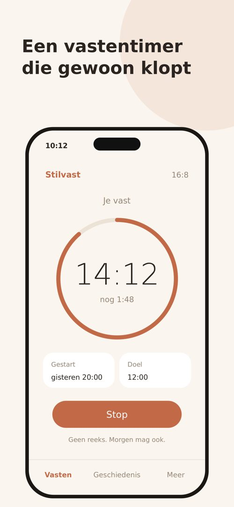
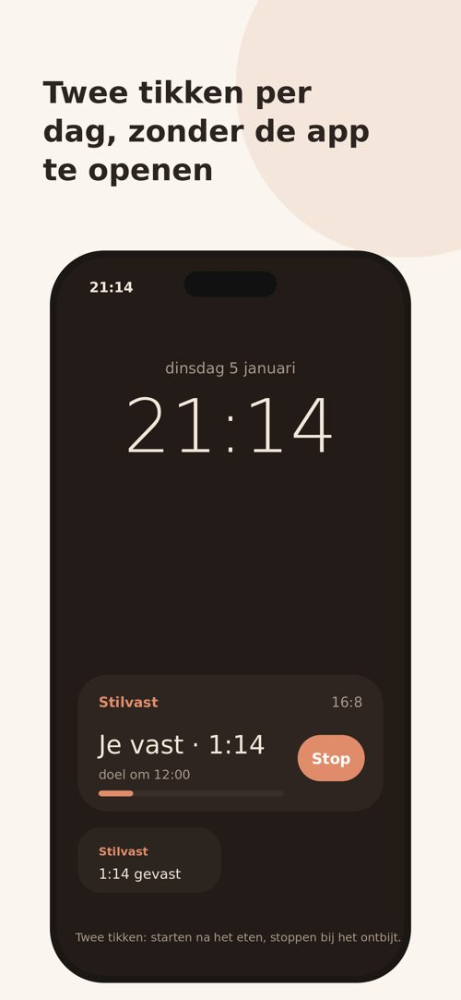
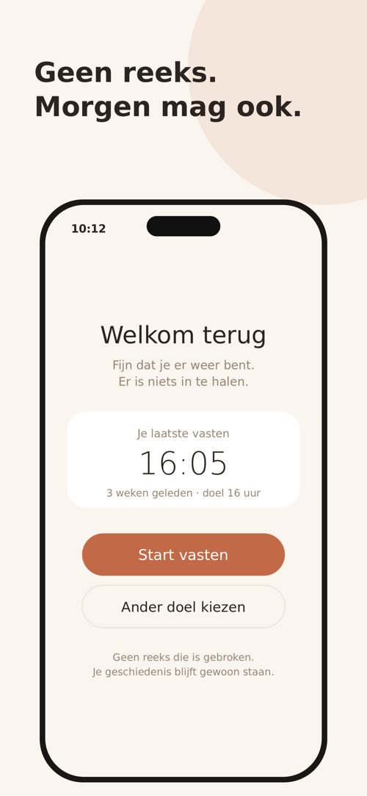

Apps › Stilvast
Stilvast: een vastentimer die gewoon klopt
Twee tikken per dag. Timen blijft altijd gratis. Eén keer betalen, nooit een abonnement.



Binnenkort in de App Store
Verwacht: dinsdag 5 januari 2027.
Wat hij doet
- Start na het avondeten, stop bij je eerste maaltijd: ook vanaf je toegangsscherm of je widget, zonder de app te openen.
- Kies 12, 14, 16, 18, 20 of 24 uur, of een eigen duur tot 7 dagen (ook voor de Veertigdagentijd).
- Vergeten te stoppen? Pas start en einde achteraf aan.
- Geen reeksen, geen badges, geen gemiste dagen. Begin je opnieuw, dan zegt Stilvast gewoon: welkom terug.
- Meldingen staan uit, behalve "doel bereikt". Exporteer alles als CSV wanneer je wilt.
Wat het kost
Gratis downloaden. Timen blijft altijd gratis. 14 dagen alles open; daarna € 4,99, één keer (lanceringsprijs tot 1 april 2027, daarna € 6,99; wie al kocht, houdt alles), voor de live-activiteit, je geschiedenis en export. Gezinsdeling: je gezin doet mee. Nooit een abonnement, nooit iets vanzelf afgeschreven.
Privacy
Geen account, geen reclame, geen trackers. Alles blijft op je telefoon; de app doet zelf geen netwerkverzoeken. In de App Store staat het label "Data Not Collected". Privacyverklaring ›
Goed om te weten
Stilvast is een timer, geen dieet en geen medisch advies. Vast niet zonder overleg met je arts als je zwanger bent, borstvoeding geeft, een eetstoornis hebt of hebt gehad, diabetes hebt of medicijnen gebruikt.
Hulp en contact
Hoe herstel ik mijn aankoop op een nieuwe telefoon?
Open Stilvast, ga naar Meer en tik op Aankoop herstellen. Je gebruikt dezelfde Apple ID.
Mijn gezin wil ook meedoen.
Met Gezinsdeling van Apple geldt één aankoop voor je hele gezin. Zet het aan in de instellingen van je iPhone bij Gezin.
Hoe krijg ik mijn vastens mee naar een andere app?
Ga naar Meer en kies Exporteer als CSV. Het bestand kun je bewaren of delen.
Wat gebeurt er met mijn gegevens als ik de app verwijder?
Dan zijn ze weg, tenzij je iCloud-back-up gebruikt of eerst exporteert. Wij hebben geen kopie.
Staat je vraag er niet bij? Mail contact@peulen.app. We lezen alles zelf.
Vast je voor de Ramadan? Kijk dan naar Durora, van dezelfde makers.